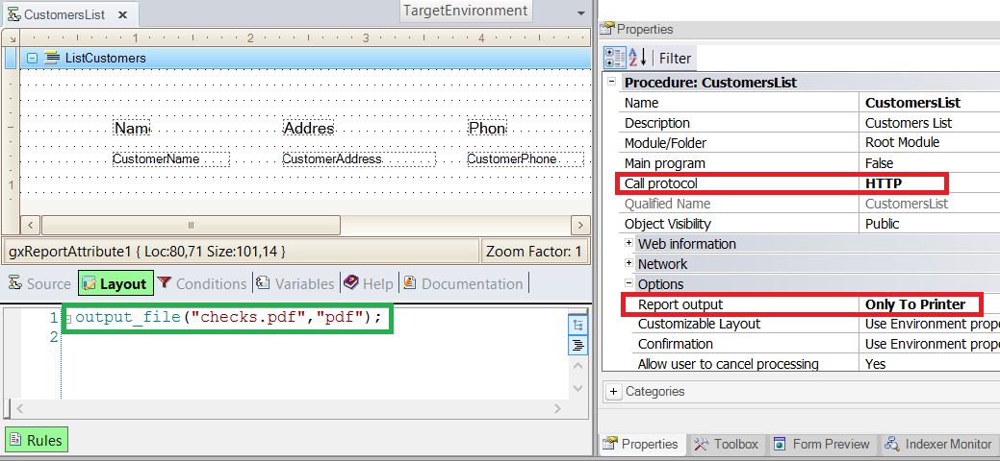
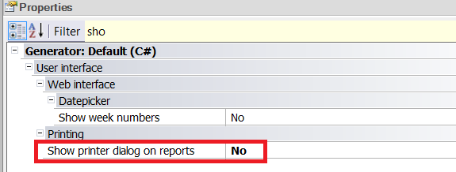

Client-side printing of PDF reports allows the user to send a PDF report to his/her printer just by pressing a button. Besides, if the application runs in an Intranet where the printers are known, the printer selection can be managed from the server using the Printer Rule and the gxprn.ini file. This solution's configuration is very similar to the configuration of any PDF report, but some particular aspects have to be considered, as explained below. How to send the PDF report to the printerTo send a report to the printer from the PC executing the browser (client PC), the report must match the following conditions:
If you want to prevent the printer's dialog from appearing, configure the following:  
Important Note
Some security aspects of the browsers and PDF readers have to be considered. The printer's confirmation dialog could be displayed depending on the browser configuration.
Specifically, for Chrome and FireFox if they use native PDF support, the Property Show Printer Dialog on reports is ignored. This means that even though this property is set to FALSE, the printer dialog confirmation is shown.
Please see Troubleshooting client-side PDF printing in Web applications How to prevent the report from being viewed on the screenBy default, the PDF report is viewed on the screen while sending it to the printer. If you want to prevent the report from being displayed on the screen before sending it to the printer, you may direct the report to a 1 x 1 size Embedded Page. This solution works when the PDF viewer doesn't open a new window (using Adobe Reader 9 you can configure "Display PDF in browser" in the Adobe preferences). Download sample from here: Silent Print Sample Without showing page How to configure the printer to be usedAdd the Printer Rule to the procedure, and configure the gxprn.ini file using the GxSetFrm Utility. When a report using Printer Rule is executed, it will search for an input in the file with the same name given to it in the rule. If there is no input with this name, or if there is no gxprn.ini file, there will be an attempt to print the report in the default printer. If gxprn.ini is not found, the property "Show Printer Dialog on reports" is considered to show or hide the printing dialog.
|
| Backlinks | |
| PDF Reports | Printer Rule |